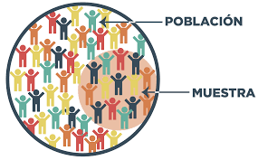

La poblaciónestadística es el conjunto de elementos o individuos que comparten una o más características comunes y que son objeto de estudio. Por ejemplo, si queremos estudiar la altura media de los estudiantes de una escuela, la población estadística sería el total de los estudiantes de esa escuela.
Existen diferentes tipos de población estadística según su tamaño, su naturaleza y su variabilidad. Algunos de ellos son:
Población finita:Es aquella que tiene un número limitado y conocido de elementos. Por ejemplo, el número de habitantes de una ciudad.
Población infinita:Es aquella que tiene un número ilimitado o desconocido de elementos. Por ejemplo, el número de estrellas en el universo.
Revisa el video que te ayudará a comprender mejor los conceptos
Muestra
Una muestra estadística es un subconjunto de elementos o individuos que se extrae de una población estadística, con el fin de estudiar sus características y hacer inferencias sobre el conjunto total. Una muestra debe ser representativa de la población, es decir, que refleje su diversidad y variabilidad, y debe ser seleccionada de forma aleatoria o sistemática, para evitar sesgos o errores en los resultados.

Las características de una muestra estadística son:
Tamaño: Es el número de elementos o individuos que componen la muestra. El tamaño de la muestra debe ser adecuado para garantizar la precisión y la confiabilidad de los estimadores estadísticos. Existen fórmulas matemáticas para calcular el tamaño óptimo de una muestra, en función del nivel de confianza, el margen de error y la variabilidad de la población. Aleatoriedad:Es la condición de que cada elemento o individuo de la población tenga la misma probabilidad de ser seleccionado para formar parte de la muestra. La aleatoriedad asegura que la muestra sea imparcial y no esté influenciada por el criterio del investigador o por factores externos. La aleatoriedad se puede lograr mediante el uso de técnicas como el sorteo, la generación de números aleatorios o el muestreo sistemático.
Los tipos de muestra estadística se pueden clasificar según el método de muestreo utilizado en:
Muestra probabilística:
Es aquella en la que se conoce la probabilidad de que cada elemento o individuo de la población sea seleccionado para la muestra, y esta probabilidad es mayor que cero. Los tipos de muestra probabilística son:
Muestra aleatoria simple:Es aquella en la que se selecciona una cantidad fija de elementos o individuos de la población al azar, sin reemplazo. Por ejemplo, se eligen 100 estudiantes de una escuela mediante un sorteo.
Muestra aleatoria estratificada:Es aquella en la que se divide la población en grupos o estratos homogéneos según una o más variables relevantes, y se selecciona una muestra aleatoria simple de cada estrato, proporcional o no al tamaño del estrato. Por ejemplo, se eligen 50 hombres y 50 mujeres de una escuela mediante un sorteo.
Muestra aleatoria por conglomerados:Es aquella en la que se divide la población en grupos o conglomerados heterogéneos que contienen una variedad de elementos o individuos, y se selecciona una muestra aleatoria simple de conglomerados, y se incluyen todos los elementos o individuos de los conglomerados elegidos. Por ejemplo, se eligen 10 aulas de una escuela mediante un sorteo, y se incluyen todos los estudiantes de esas aulas.
Muestra aleatoria sistemática:Es aquella en la que se selecciona un elemento o individuo de la población al azar, y luego se seleccionan los demás elementos o individuos siguiendo un patrón o intervalo fijo. Por ejemplo, se elige un estudiante de una escuela al azar, y luego se eligen los demás estudiantes cada 10.
Muestra no probabilística:
Es aquella en la que se desconoce la probabilidad de que cada elemento o individuo de la población sea seleccionado para la muestra, o esta probabilidad es cero. Los tipos de muestra no probabilística son:
Bola de Nieve: El muestreo no probabilístico de bola de nieve es un método de selección de una muestra que se utiliza cuando los individuos o elementos de la población son difíciles de encontrar o identificar. Consiste en pedir a los primeros participantes del estudio que recomienden o inviten a otros posibles participantes que cumplan con los criterios de inclusión. De esta forma, la muestra se va ampliando como una bola de nieve que rueda por la nieve.
Muestra por conveniencia:Es aquella en la que se seleccionan los elementos o individuos de la población que son más accesibles o disponibles para el investigador, sin seguir ningún criterio de aleatoriedad. Por ejemplo, se eligen los estudiantes de una escuela que están en el patio en un momento determinado.
Muestra por cuotas:Es aquella en la que se seleccionan los elementos o individuos de la población que cumplen con ciertas características o cuotas preestablecidas por el investigador, sin seguir ningún criterio de aleatoriedad. Por ejemplo, se eligen 25 estudiantes de una escuela que tengan entre 15 y 18 años, 25 que tengan entre 19 y 22 años, y así sucesivamente.
Muestra discrecional: Una muestra discrecional es un tipo de muestra no probabilística en la que el investigador selecciona los elementos o individuos que forman parte de la muestra basándose en su conocimiento, experiencia o criterio profesional sobre el tema de estudio. Este tipo de muestra también se conoce como muestra deliberada, crítica, de juicio o intencional.
El siguiente video te ayudará a comprender mejor los conceptos.
Recolección de Datos
Existen dos maneras de recoger datos que son determinantes para las probabilidades de la selección de elementos: el muestreo con reemplazo y el muestreo sin reemplazo.
El muestreo con reemplazoes aquel en el que se selecciona un elemento de la población y luego se devuelve a la misma antes de seleccionar otro elemento. De esta forma, un mismo elemento puede ser elegido más de una vez para la muestra. Por ejemplo, si se tiene un sombrero con cinco nombres y se quiere tomar una muestra de dos nombres con reemplazo, se podría elegir el nombre de Ana y luego volver a ponerlo en el sombrero y elegir otro nombre, que podría ser Ana nuevamente o cualquier otro. Cuando se toma una muestra con reemplazo, los elementos de la muestra son independientes, es decir, la probabilidad de elegir un elemento no depende de los elementos elegidos anteriormente.
El muestreo sin reemplazoes aquel en el que se selecciona un elemento de la población y luego se retira de la misma antes de seleccionar otro elemento. De esta forma, un mismo elemento no puede ser elegido más de una vez para la muestra. Por ejemplo, si se tiene un sombrero con cinco nombres y se quiere tomar una muestra de dos nombres sin reemplazo, se podría elegir el nombre de Ana y luego dejarlo fuera del sombrero y elegir otro nombre, que no podría ser Ana sino cualquier otro. Cuando se toma una muestra sin reemplazo, los elementos de la muestra son dependientes, es decir, la probabilidad de elegir un elemento depende de los elementos elegidos anteriormente.